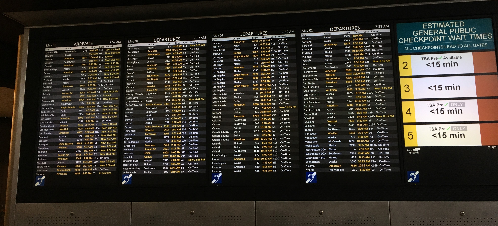
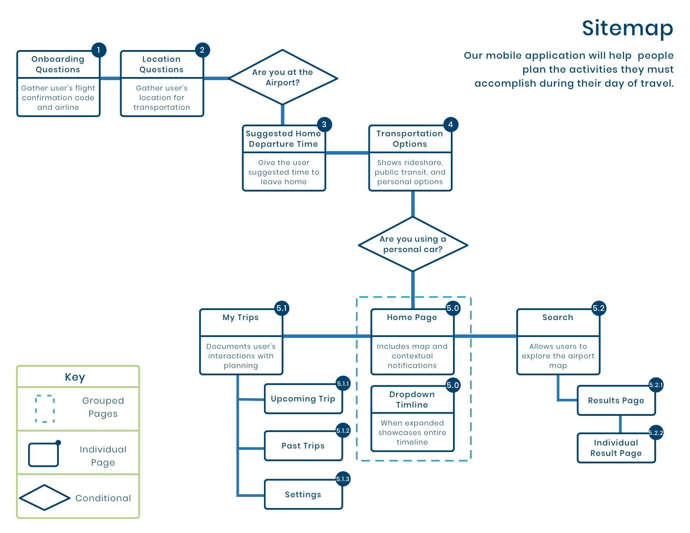
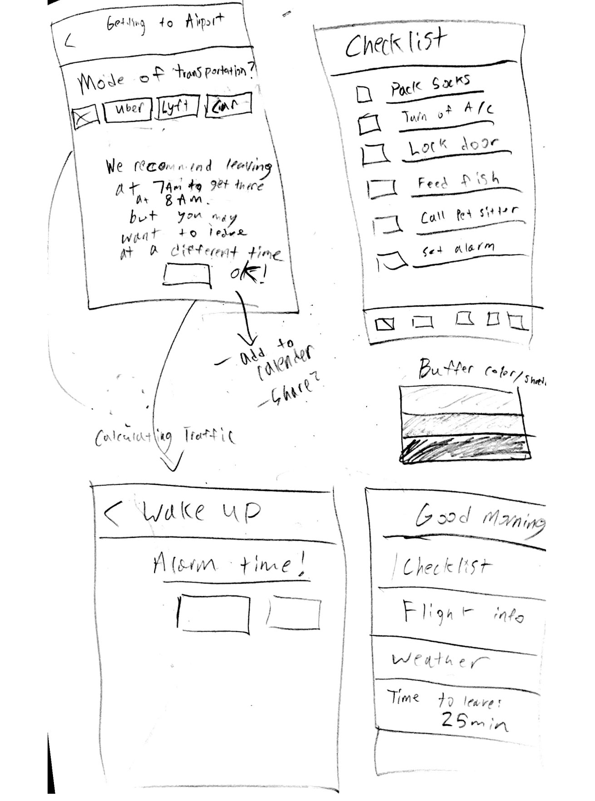
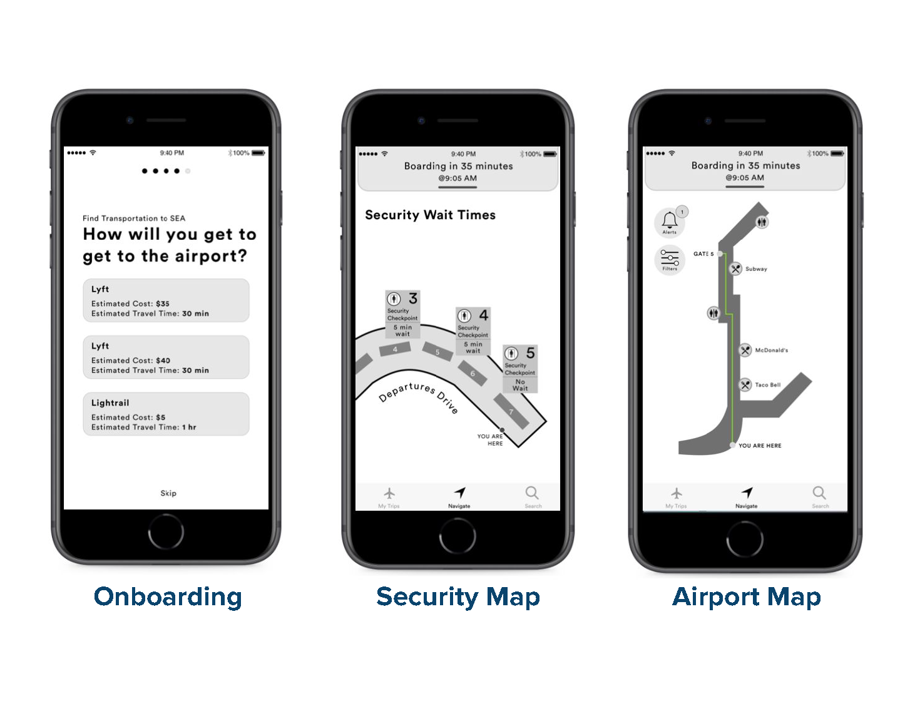
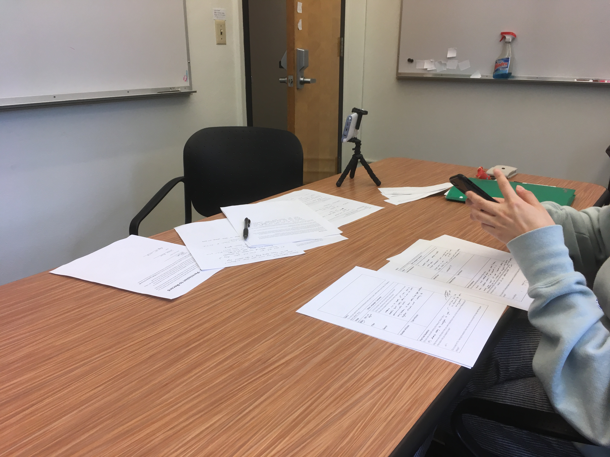
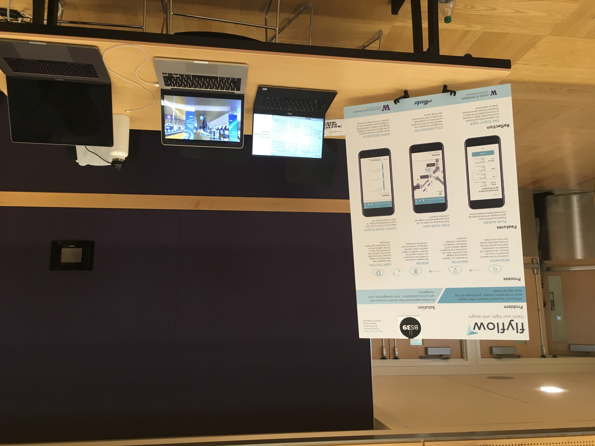
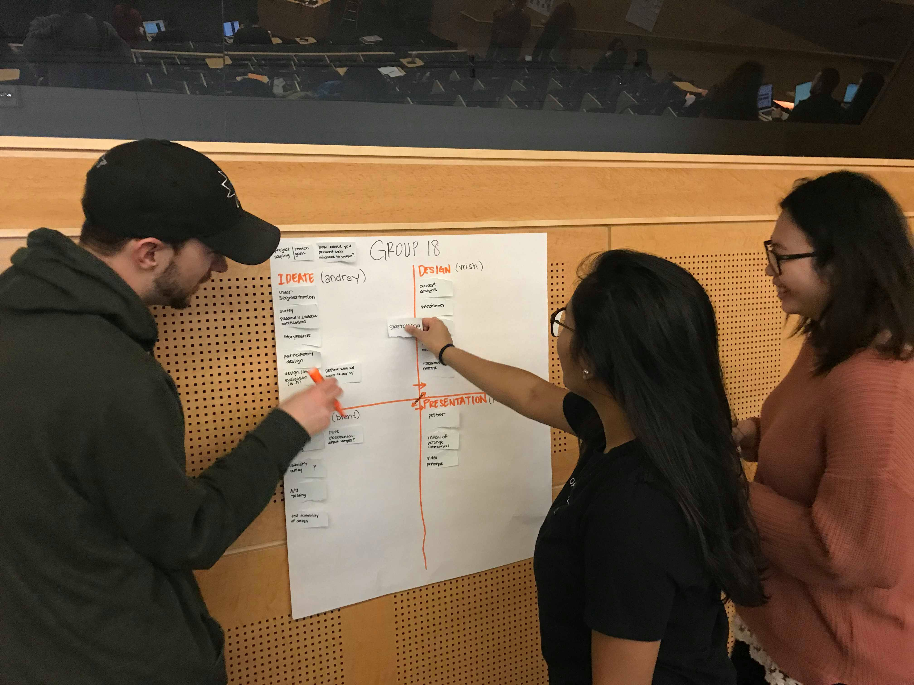
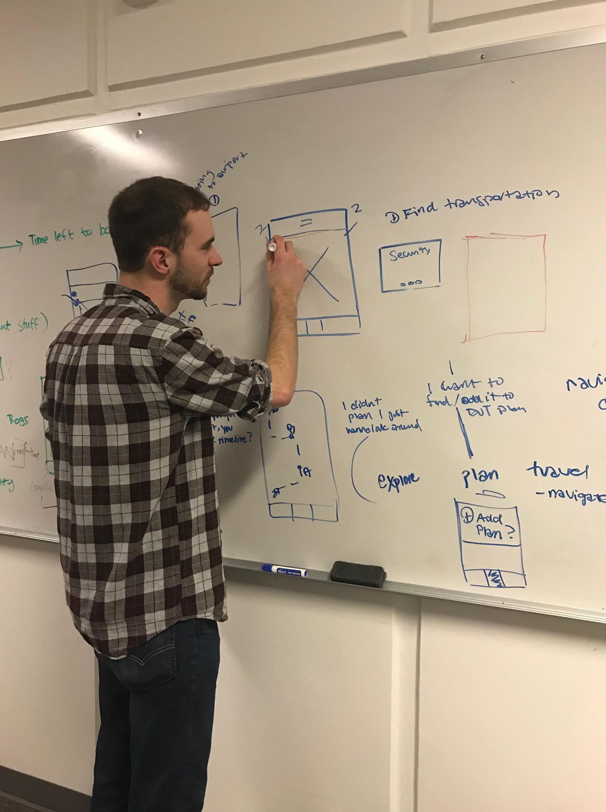

Flyflow is a travel application for making getting to the airport, and getting to your gate a more pleasant experience. A 12-week capstone project involving a full user centered design process of research, design, and design evaluation. Methods included an online survey, participatory design session, storyboarding, wireframing, usability testing, and creating high fidelity prototypes. My role on the project was to lead the research efforts as well as direct and edit the products video prototype. Additionally, I wireframed the security and transportation user flows.
The user experience throughout a day of travel is often taxed with uncertainty, stress, unexpected changes, and frustration.
How can we empower infrequent travelers with timely and relevant information that reduces the mental math, stress, and anxiety that is associated with their day of travel?
In order to pinpoint times and activities that cause the most stress during traveling we sent out an online survey to better scope the project. We also wanted to determine if participants wanted proactive or reactive notification systems. The primary goal of the survey was to recruit participants for the participatory design session we had planned to kickoff our design process with.
The challenge of designing a better user experience for infrequent travelers first required us to define what an infrequent traveler was.
Infrequent travelers aren’t 100% comfortable with traveling.
These were some of the main pain points from our research findings:
Uncertainty: “One of the biggest unknowns in travel takes place before you get to the airport” - survey participant.
Being late: “I always worry about being late. [...] I always check how long it takes to get there over and over since I’m anxious.” - survey participant.
Lack of Control: “An unfamiliar airport makes everything less comfortable” - survey participant.
Security: Going through security was an overall low point that generates feelings of annoyance, anxiety, and relief.
With these in mind, we conducted a participatory design session to validate these pain points and explore solutions. We asked participants to list out day of travel activities on sticky notes. Then we asked them to categorize them and sketch solutions to the problems presented. Lastly, we ranked the participants sketches and discussed problems surrounding travel. We came up with these three basic needs from the design session.
Needs:
The entire system
After conducting a survey, participatory design session, and a sitemap, we began sketching interfaces and solutions to the problems travelers faced. We were able to create a mostly grey scale flow for booking transporation to the airport, choosing a security line, and searching and filtering for locations around the airport. The system defaults to directing travelers towards their flight's gate. It works by automatically because it knows which flight you are on.
 Before we jumped into hi-fidelity mockups we wanted to make sure our designs were what travelers actually wanted or needed. The team was fortunate enough to have the opportunity to go to Seattle-Tacoma airport and conduct 8 quick guerilla usability studies. I moderated four of these. The tasks we asked participants to complete with our wireframes were: find transportation to the airport, choose a security line, navigate through the airport, and search for specific locations.
Participants were waiting at their gates for their flights to board when we asked them to test our wireframes. From doing this we were able to understand how users would use our app in-context. The largest takeaway was that participants preferred using the map instead of searching or filters. Our map had to be more robust in-order for participants to find value in it.
All this testing lead us to create a refined prototype know as “Flyflow”. The app still allows users to schedule rides to the airport, displays information about security wait times, and helps travelers keep track of their time at the airport. By not focusing on search or filter functionality, we are able to focus on the maps functionality. Before finalizing these screens we did 4 usability tests with infrequent travelers. They gave us a variety of feedback that we decided to iterate on:
| Problem | Solution | |
|---|---|---|
| 1 | Uncertainty if security wait times were the most up to date | Add a refresh button to empower travelers to trust that the times are as up to date as possible |
| 2 | Participants skipped over the alerts icon | Add it to the top navbar along with the other app wide controls |
| 3 | Lack of visual consistency in viewing the itinerary | Move the itinerary to a bottom pull up rather than a pull down |
| 4 | Confusion on the travelers icon displayed on the map | Use a more animated icon with colors that match Flyflow's design language |
Rapid evaluation was helpful in informing designs and meaningful features can come from listening to user feedback. Sometimes it can be difficult balancing designer intuition and listening to user feedback. Often times users aren’t sure what they actually want until the experience is presented to them. This was especially found in the navigation aspect of the Flyflow. During the participatory design, travelers were psyched about navigation and wayfinding within an airport app but when we conducted later usability studies, participants were unsure if the wayfinding features would be useful since airports should be physically easy to navigate. Furthermore, this revealed a flaw in our recruiting and map design. We prototyped Sea-tac airport but all of the participants we tested were familiar with Sea-tac airport. We are unsure how this would have impacted participants if the map was of a airport they had never been to before.
This could have been avoided if we had a more strict participant criteria or if we had a specific airport as a client. We could have been more aware of participant biases and circumstances. Every person has a different experience and outlook on traveling.
Participants gave us insightful feedback that an airport app that had the functionality of preparedness, time management, and navigation, might be most useful in large and confusing airports, international airports, or during long layovers.
Overall, this entire process was both exciting and grueling at times. Designing for travelers is personally very fascinating and I look forward to seeing how airline companies will improve the user experience of traveling in the future.
Invision Prototype Research, Design, Video Production Sketch, Invision, Participatory Design, Usability testing